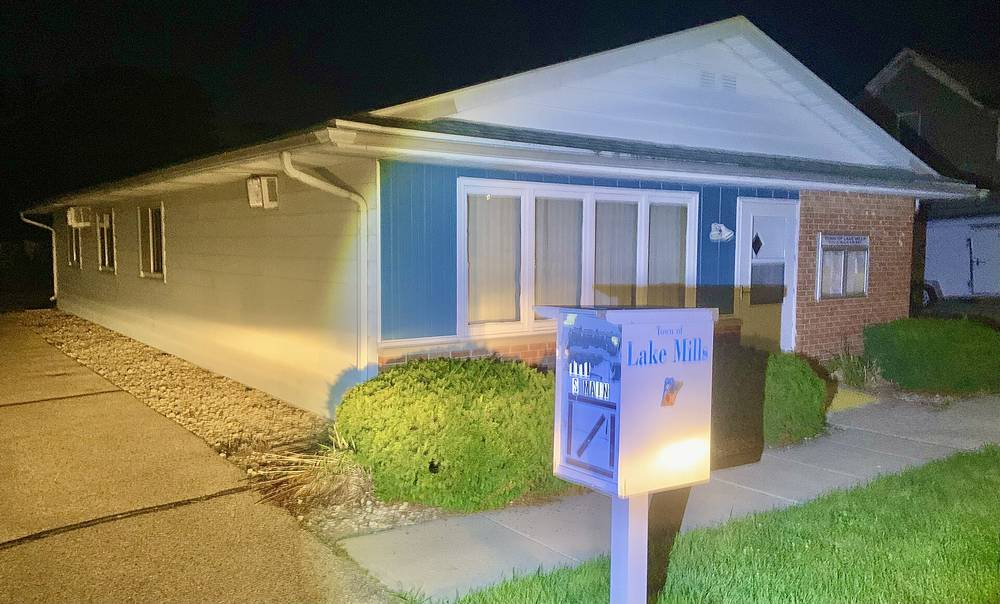

미국 위스콘신 레이크밀스 학군, 초·중학교 지붕 태양광·배터리 준공…추정 사업비 140만 달러 중 보조금 50만 달러 넘게 모아

지역 태양광 업체 제안에 태양광 협동조합이 보조금 작업 맡아…초교 전기 23%·중학교 41% 상계 예상, 정전 땐 배터리로 최대 3일 버텨
미국 위스콘신주 레이크밀스 지역 학군이 초등학교와 중학교 지붕에 태양광 패널을, 중학교 안에 배터리를 갖추고 10월 29일 중학교 도서관에서 준공 기념 행사를 열었다. 이 사업은 2022년 레이크밀스 주민이자 지역 태양광 업체 U.S. Solar Network 대표인 빌 맥도웰(Bill McDowell)이 토냐 올슨(Tonya Olson) 학군 행정책임자에게 학교 태양광을 제안하면서 시작됐고, 공사는 올여름 끝났다. 학군은 태양광 협동조합 Legacy Solar Co-Op의 엘리스 쿠이야드(Elise Couillard)와 함께 RENEW Wisconsin의 Solar for Good, Focus on Energy, Solar for Schools 등 다섯 갈래 보조금을 모아 50만 달러 넘게 받았고, 올슨 책임자는 이 돈이 추정 총사업비 140만 달러의 30~40%라며 나머지는 주민투표로 승인된 채권의 이자로 충당해 납세자 추가 부담은 없다고 밝혔다. 태양광은 초등학교 연간 전기 사용의 23%, 중학교의 41%를 상계할 것으로 예상되고, 도시가 정전되면 중학교 배터리에 모아 둔 전기로 학군 전기를 최대 3일 유지할 수 있다. 정확한 절감액은 아직 알 수 없지만 학군은 한 달 약 5,800달러로 추정하며, 1년 뒤 월별 요금을 견줘 확인하겠다는 계획이다. 올슨 책임자는 "결국 납세자의 돈을 아끼게 될 것"이라며 아낀 요금을 아이들에게 바로 쓸 예산으로 돌릴 수 있다고 말했다.
시민에너지 관점
영국 웨일스의 에그니 협동조합(Egni Co-op)은 지역 자선단체가 세운 협동조합으로, 주민 출자를 모아 학교와 공동체 건물 지붕에 태양광을 올리고 그 전기를 건물이 쓰게 하는 방식으로 학교가 큰 설치비를 떠안지 않게 해 왔다. 레이크밀스 학군은 보조금 50만 달러 남짓을 모으고도 나머지 사업비를 채권으로 메워야 했는데, 같은 지붕에 주민 출자를 받았다면 학교 재정 부담을 덜면서 수익이 동네 주민에게 돌아갔을 것이다. 학교 지붕을 오래 협동조합에 맡기면 학교 운영에 짐이 된다는 걱정이 있지만, 지붕 사용 기간과 유지보수 책임, 계약이 끝난 뒤 설비를 학교에 넘기는 조건을 처음부터 계약서에 적으면 풀 수 있는 문제다. 우리 교육청과 지자체도 학교 지붕 태양광을 예산 사업으로만 볼 것이 아니라 학부모·주민이 출자하는 협동조합에 문을 여는 공모 규칙을 만들어야 한다.
출처: hngnews.com (Leader Independent) 2026-11-02 애비게일 카버시키(Abigail Karbusicky) 원문 보기
米ウィスコンシン州レイクミルズ学区、小・中学校の屋根に太陽光と蓄電池が完成…推定事業費140万ドルのうち補助金50万ドル超を確保
地元の太陽光事業者の提案を受け、太陽光協同組合が補助金の申請作業を担当…小学校の電力23%・中学校41%を相殺見込み、停電時は蓄電池で最長3日
米ウィスコンシン州のレイクミルズ地域学区が、小学校と中学校の屋根に太陽光パネルを、中学校内に蓄電池を設け、10月29日に中学校の図書館で完成記念式を開いた。事業は2022年、レイクミルズ在住で地元の太陽光事業者U.S. Solar Networkを率いるビル・マクダウェル（Bill McDowell）氏が、学区の行政責任者トーニャ・オルソン（Tonya Olson）氏に学校への太陽光導入を持ちかけたことから始まり、工事は今夏に終わった。学区は太陽光協同組合Legacy Solar Co-Opのエリス・クイヤード（Elise Couillard）氏とともに、RENEW WisconsinのSolar for Good、Focus on Energy、Solar for Schoolsなど5種類の補助金を集めて50万ドル超を受け取り、オルソン氏はこれが推定総事業費140万ドルの30〜40%にあたり、残りは住民投票で承認された債券の利息で賄うため納税者の追加負担はないと説明した。太陽光は小学校の年間電力使用の23%、中学校の41%を相殺する見込みで、市が停電した際には中学校の蓄電池にためた電力で学区の電気を最長3日間維持できる。正確な節約額はまだ分からないが、学区は月約5,800ドルと見積もっており、1年後に月ごとの料金を比べて確かめる計画だ。オルソン氏は「最終的には納税者のお金を節約することになる」と述べ、浮いた料金を子どもたちに直接使う予算に回せると語った。
市民エネルギーの視点
英国ウェールズのエグニ協同組合（Egni Co-op）は地元の慈善団体が設立した協同組合で、住民の出資を集めて学校やコミュニティ施設の屋根に太陽光を載せ、その電気を建物で使ってもらう方式により、学校が大きな設置費を背負わずに済むようにしてきた。レイクミルズ学区は補助金50万ドル余りを集めてもなお残りの事業費を債券で埋める必要があったが、同じ屋根で住民の出資を受けていれば、学校の財政負担を減らしつつ収益を地域の住民に還元できたはずだ。学校の屋根を長く協同組合に任せると学校運営の負担になるという懸念もあるが、屋根の使用期間や保守の責任、契約終了後に設備を学校へ引き渡す条件を最初から契約書に明記すれば解決できる問題だ。韓国の教育庁や自治体も、学校屋根の太陽光を予算事業としてだけ見るのではなく、保護者や住民が出資する協同組合に門戸を開く公募のルールをつくるべきだ。
出典: hngnews.com（Leader Independent） 2026-11-02 アビゲイル・カーバシキー（Abigail Karbusicky） 原文を読む
美国威斯康星州莱克米尔斯学区中小学屋顶光伏和储能电池落成…预计总投资140万美元，争取到补助逾50万美元
当地光伏企业提议，光伏合作社负责补助申请…预计抵消小学23%、初中41%用电，停电时电池最多可撑3天
美国威斯康星州莱克米尔斯地区学区在小学和初中屋顶装上光伏板，并在初中校内配置储能电池，10月29日在初中图书馆举行落成仪式。项目始于2022年，莱克米尔斯居民、当地光伏企业U.S. Solar Network负责人比尔·麦克道尔（Bill McDowell）向学区行政主管托尼娅·奥尔森（Tonya Olson）提议在校舍安装光伏，工程于今年夏天完工。学区与光伏合作社Legacy Solar Co-Op的埃莉斯·库亚尔（Elise Couillard）一起，争取到RENEW Wisconsin的Solar for Good、Focus on Energy、Solar for Schools等五类补助，合计逾50万美元；奥尔森表示，这笔钱约占预计总投资140万美元的30%至40%，其余部分用经居民投票批准的债券利息支付，纳税人无需额外负担。预计光伏可抵消小学全年用电的23%、初中的41%；城市停电时，学区可用初中电池中储存的电力维持供电最多3天。确切节省金额尚不清楚，学区估计每月约5,800美元，并计划一年后逐月对比电费加以确认。奥尔森说，“最终会为纳税人省钱”，节省下来的电费可以转为直接用在孩子身上的预算。
市民能源视角
英国威尔士的埃格尼合作社（Egni Co-op）由当地慈善组织创办，以居民入股的资金在学校和社区建筑屋顶安装光伏，再把电力供给这些建筑使用，让学校不必承担高额安装费。莱克米尔斯学区筹到50多万美元补助后，仍须用债券填补其余投资；如果同样的屋顶接受居民入股，既能减轻学校财政负担，收益也能回到本地居民手中。有人担心把学校屋顶长期交给合作社会给学校运营添负担，但只要一开始就在合同中写明屋顶使用期限、维护责任以及合同期满后把设备移交学校的条件，这些问题都可以解决。韩国的教育厅和地方政府也不应只把学校屋顶光伏当作预算项目，而应制定向家长和居民入股的合作社开放的公开招募规则。
来源: hngnews.com（Leader Independent） 2026-11-02 阿比盖尔·卡尔布西基（Abigail Karbusicky） 查看原文
Lake Mills school district in Wisconsin completes rooftop solar and battery at elementary and middle schools, with more than $500,000 in grants toward an estimated $1.4 million cost
Local solar business proposed the project and a solar co-op handled grant work; panels expected to offset 23% of elementary and 41% of middle school power use, battery can keep power on for up to three days in an outage
The Lake Mills Area School District in Wisconsin has put solar panels on the roofs of its elementary and middle schools and a battery inside the middle school, marking completion with a ribbon cutting in the middle school library on Oct. 29. The project began in 2022 when Bill McDowell, a Lake Mills resident who runs the local solar business U.S. Solar Network, proposed school solar to District Administrator Tonya Olson, and construction finished this summer. Working with Elise Couillard of Legacy Solar Co-Op, the district gathered more than $500,000 from five grant sources, including RENEW Wisconsin's Solar for Good, Focus on Energy and Solar for Schools; Olson said this covers about 30% to 40% of the estimated $1.4 million total cost, with the remainder paid from interest on referendum bonds at no added cost to taxpayers. The panels are expected to offset 23% of the elementary school's annual electricity use and 41% of the middle school's, and if the city loses power, the battery at the middle school can keep the district's electricity running for up to three days. The exact savings are not yet clear, but the district estimates about $5,800 a month and plans to compare bills month by month after a year. Olson said the project "will save taxpayers money in the end" and will free up budget that can be spent directly on students.
Citizen Energy View
In Wales, Egni Co-op, a cooperative set up by a local charity, has raised residents' investment to put solar on the roofs of schools and community buildings and lets those buildings use the power, sparing schools a large installation bill. Lake Mills still had to cover the rest of its cost with bonds after collecting just over $500,000 in grants; had the same roofs taken investment from residents, the school's financial burden could have been eased and the returns kept with local people. Some worry that handing school roofs to a cooperative for many years would burden school management, but writing roof-use terms, maintenance duties and the handover of equipment to the school at contract end into the agreement from day one deals with that. Korean education offices and local governments should stop treating school rooftop solar purely as a budget line and set open tender rules that let cooperatives funded by parents and residents take part.
Source: hngnews.com (Leader Independent) 2026-11-02 Abigail Karbusicky Read the original